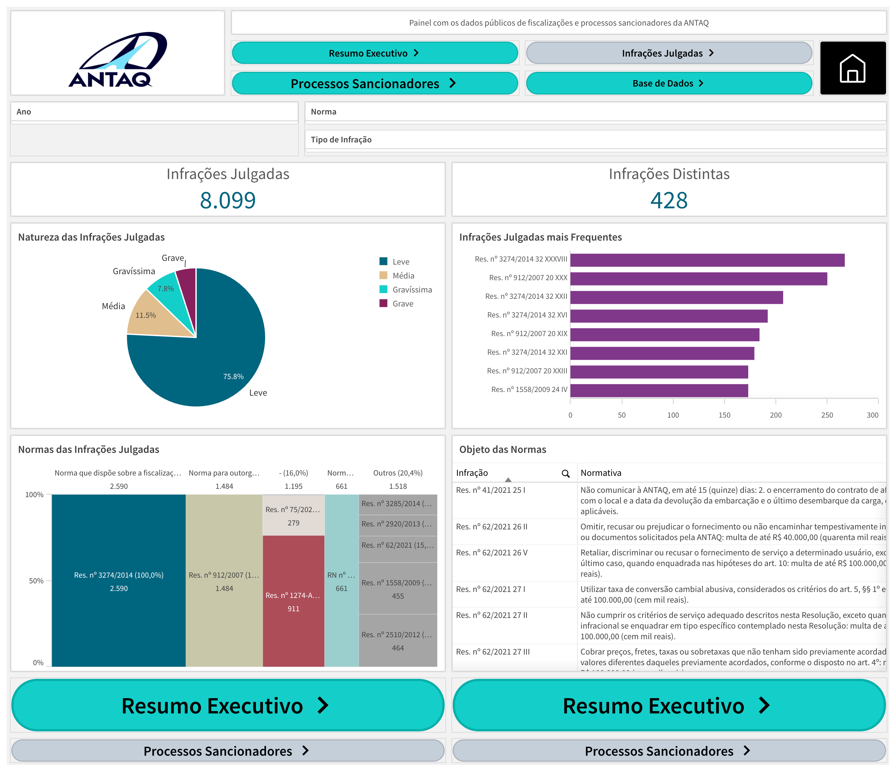

Transparência ativa para a sociedade
PLANEJAMENTO
Dados abertos à sociedade
Disponível ao público em geral, reúne todas as infrações transitadas em julgado e os processos sancionadores arquivados sem irregularidade presentes nas bases de dados da ANTAQ.
Gráficos e tabelas consolidados
Resumo executivo com gráficos e tabelas gerais sobre processos e normas aplicadas, em uma visão clara e navegável.
Base de dados para download
É possível baixar a base completa para análises mais detalhadas, apoiando estudos e o controle social.
Caminho de acesso

Trilha Técnica da Fiscalização · SFC / GPF — ANTAQ
24 / 61